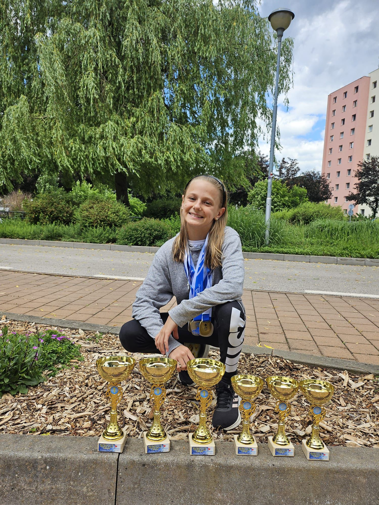

| 🥇 Ela Kubálková | 9:54,45 | 13. 6. 2026 |
| Zoe Tůmová | 9:55,76 | 13. 6. 2026 |
| Kateřina Černíková starý ČR | 9:56,18 | 2012 |
Praha – Podolí, 13. 6. 2026 · Zoe Tůmová zaplavala ve stejném závodě čas pod starým rekordem — počítá se však rychlejší čas.
| 50 m prsa | 0:34,64 | |
| 800 m volný způsob | 9:39,48 | |
| 200 m volný způsob | 2:14,13 | |
| 400 m volný způsob | 4:43,15 | |
| 100 m volný způsob | 1:04,57 | |
| 400 m polohový závod | 5:32,02 | |
| 200 m polohový závod | 2:40,32 | |
| 50 m volný způsob | 0:30,24KIN | |
| 200 m motýlek | 2:39,12KIN | |
| 100 m motýlek | 1:13,03 |
| 800 m volný způsob | 9:54,45ČR | |
| 400 m volný způsob | 4:53,48 | |
| 200 m volný způsob | 2:21,26 | |
| 100 m volný způsob | 1:06,46 | |
| 200 m polohový závod | 2:41,67 | |
| 50 m volný způsob | 0:31,38 | |
| 200 m motýlek | 2:48,04 | |
| 50 m motýlek | 0:34,14 | |
| 200 m znak | 2:52,93 | |
| 100 m motýlek | 1:17,96 |
Seřazeno podle FINA bodů – jednotná škála výkonnosti napříč disciplínami.